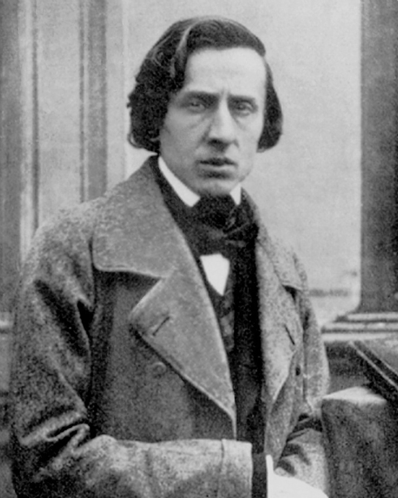
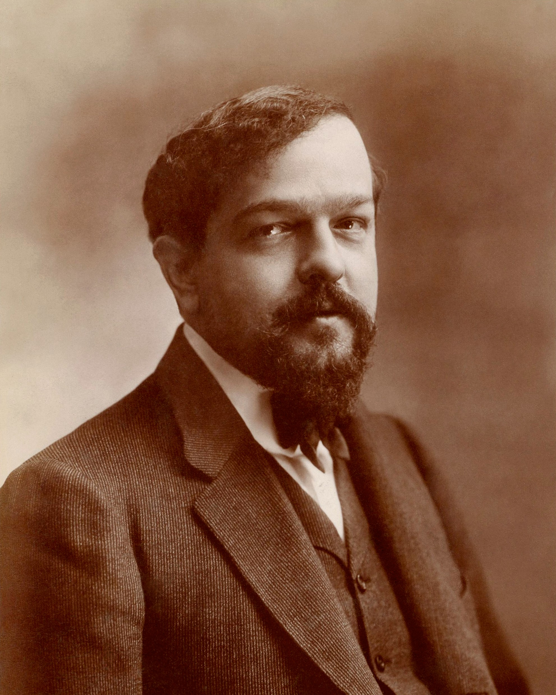

Johann Sebastian Bach
(1685-1750)
The Baroque genius who wrote music as intricate as a puzzle.
Famous Pieces
- Toccata and Fugue in D minor, BWV 565
- Cello Suite No. 1 in G major, BWV 1007
- Chaconne from Partita No. 2 in D minor, BWV 1004
Fun Facts
- Had 20 children, though only half made it to adulthood.
- He once got jailed for trying to quit his job too abruptly.
- Walked 250 miles on foot to hear his idol Buxtehude.
Wolfgang Amadeus Mozart
(1756-1791)
A child prodigy who amazed Europe with hundreds of brilliant pieces.
Famous Pieces
- Serenade No. 13 in G major, K. 525
- Requiem in D minor, K. 626
- Symphony No. 41 in C major, K. 551
Fun Facts
- Wrote his first symphony when he was eight years old.
- He kept a pet starling that could sing one of his tunes almost perfectly.
- Had a sister who was also as talented but couldn't pursue a career due to gender norms.

Ludwig van Beethoven
(1770-1827)
Famous for writing symphonies even after losing his hearing.
Famous Pieces
- Symphony No. 5 in C minor, Op. 67
- Symphony No. 9 in D minor, Op. 125
- Piano Sonata No. 14 in C♯ minor, Op. 27 No. 2
Fun Facts
- Brewed coffee with exactly 60 beans per cup.
- Despite his musical genius, he was notoriously bad at math and studies.
- His “Immortal Beloved” letter remains a great mystery.

Frédéric Chopin
(1810-1849)
A piano specialist who poured deep emotions into beautiful melodies.
Famous Pieces
- Nocturne in E-flat major, Op. 9, No. 2
- Polonaise in A-flat major, Op. 53
- Ballade No. 1 in G minor, Op. 23
Fun Facts
- After his death, his heart was taken to Warsaw and kept in a church.
- He often played piano in the dark to spark his imagination.
- He had a famous romance with the writer George Sand.
Franz Liszt
(1811-1886)
The rock star of his time, dazzling crowds with wild piano solos.
Famous Pieces
- Hungarian Rhapsody No. 2 in C♯ minor
- Liebestraum No. 3
- Piano Sonata in B minor, S.178
Fun Facts
- Women were so crazy for him that “Lisztomania” swept across Europe.
- He could sight-read Chopin's hardest pieces as if they were simple.
- His hands were said to be so large and flexible he could span 12 notes easily.

Claude Debussy
(1862-1918)
A composer who created music that sounded new and different.
Famous Pieces
- Clair de lune
- Prélude à l'après-midi d'un faune
- La mer
Fun Facts
- His family was poor and had no interest in music.
- Won the Prix de Rome, the most prestigious musical award in France, at the age of 22.
- Had his early work rejected by famous russian composer Tchaikovsky.